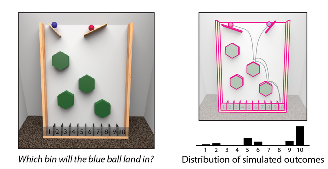
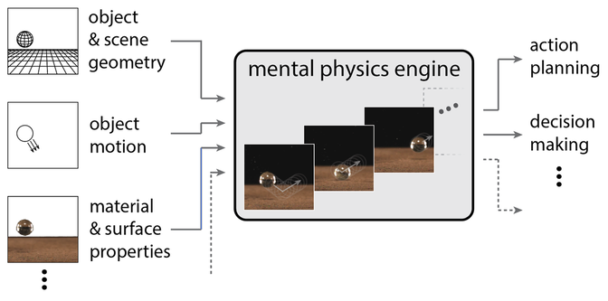

Engaging with everyday environments requires far more than passive perception: it depends on a continuous and highly structured understanding of the physical properties and dynamics that govern the world around us. In daily life, humans effortlessly evaluate how objects rest on and support one another, anticipate how they may be acted upon, and predict how they will behave when they fall, roll, collide, or deform. These judgments are typically fast, intuitive, and remarkably precise, allowing us to plan and execute complex actions in real time. Despite their apparent ease, such abilities rely on sophisticated internal representations and computations that operate largely outside conscious awareness.

A growing body of research suggests that these competencies are supported by an intuitive physics system—a set of cognitive mechanisms that enable people to reason about physical events in a manner that is approximate, probabilistic, and task-adaptive rather than strictly veridical. Work in cognitive science and neuroscience has increasingly converged on the idea that humans rely on internal generative models of the physical world, sometimes described as a mental physics engine, to simulate and predict physical outcomes. Rather than explicitly calculating physical equations, this system appears to operate by simulating likely future states of the world, integrating perceptual input with prior knowledge and experience.
Research in our lab is aimed at characterizing the mental processes and computations underlying this intuitive understanding of physical structure and dynamics. Specifically, we investigate what kinds of internal operations constitute the core of intuitive physics, how these operations are recruited across different physical scenarios, and how they interact with other cognitive systems. Recent and ongoing work provides evidence that physical reasoning is not monolithic, but instead relies on a flexible combination of perceptual analysis, memory-based expectations, and simulation-like processes that are dynamically modulated by task demands and context.

Dedicated Cognitive Resources
One central question concerns whether there are dedicated cognitive resources for intuitive physics. Behavioral and neurocognitive evidence suggests that reasoning about physical events engages partially specialized mechanisms that are distinct from, yet closely integrated with, systems for perception, attention, and action planning. For example, studies on physical scene understanding indicate that predictive processing of object interactions can occur rapidly and sometimes independently of explicit attentional focus, while still being influenced by top-down goals and expectations. This raises the possibility that intuitive physics relies on domain-specific representations that are nevertheless embedded within broader perceptual–cognitive architectures.
Computational Structure
Another key line of inquiry addresses the computational structure of the intuitive physics system. Are there mental algorithms tailored to specific classes of events, such as collisions or balance, or to specific types of materials, such as rigid bodies, fluids, or deformable objects like cloth? Evidence from both vision research and action-related studies suggests that different physical properties may be processed with varying degrees of abstraction and sensory grounding.

Embodied and Multimodal Representations
Our work also explores how physical reasoning is grounded in embodied interactions with the world. Studies have demonstrated that participants adopt control strategies consistent with Newtonian physics when using natural, sensorimotor interactions, but resort to simpler heuristics when interactions are more abstract. This suggests that the format of interaction—whether embodied or symbolic—fundamentally shapes the nature of physical reasoning.
Development and Evolution
Our work also explores how intuitive physics abilities change across the lifespan and with experience. Extensive training in perceiving and predicting specific physical scenarios—such as planning a billiards shot, balancing objects on a tray, or anticipating the movement of tools—can lead to measurable improvements in physical reasoning. A crucial question is whether such improvements reflect fine-tuning of general-purpose simulation mechanisms or the acquisition of more specialized representations tied to particular contexts.
Interactions with Perception and Memory
Finally, an important focus of our research concerns how intuitive physics interacts with perception, attention, and memory. Physical predictions are deeply intertwined with perceptual representations: sensory input constrains simulation, while prior knowledge and expectations shape how physical scenes are interpreted. Understanding how intuitive physics is embedded within these broader representational systems is essential for explaining how humans achieve such robust and adaptive interactions with the physical world.